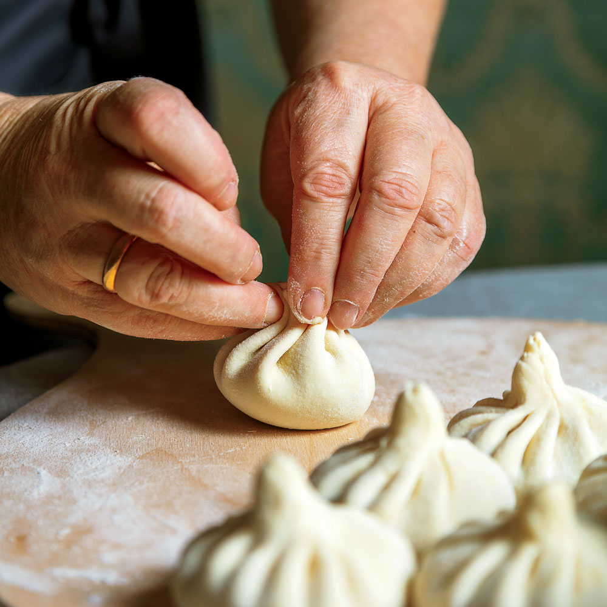

Khinkali

Description
Khinkali are Georgian dumplings. They’re one of the country’s most popular foods and a favorite item at long dinner parties known as supras. “No supra is complete without a platter of steaming khinkali being served toward the end of the meal,” says Carla Capalbo, author of Tasting Georgia, who shared this recipe with F&W. “The dumplings make a warming complement to the feast’s complex flavours.” Khinkali may be stuffed with vegetable fillings, such as potato or mushroom, but these meat versions—with a brothy spiced-meat filling, like soup dumplings—are the most common. They’re designed to be eaten by hand: Hold each dumpling aloft by its stem (like an open umbrella), sprinkle it with black pepper, and take a small bite from the side of the cushiony top, sucking out the hot broth before chewing your way into the filling. Discard the doughy stem. (You’ll have more room for dumplings that way.)
Ingredients
DOUGH
- 2 cups all-purpose flour (about 8 1/2 ounces), plus more for work surface
- 1/2 teaspoon fine sea salt
- 1/2 cup water
- 1 large egg, beaten
- Olive oil, for greasing
MEAT FILLING
- 4 ounces 80% lean ground beef
- 4 ounces ground pork
- 3/4 cup water
- 1/3 cup finely chopped yellow onion
- 2 tablespoons finely chopped fresh cilantro
- 2 tablespoons unsalted butter, melted
- 1 teaspoon fine sea salt
- 1/4 teaspoon dried kondari (summer savory) or mild thyme
- 1/4 teaspoon coriander seeds, crushed
- 1/4 teaspoon caraway seeds, finely chopped
- 1/4 teaspoon freshly ground black pepper, plus more for serving
- 1/4 teaspoon crushed red pepper, or to taste
- 1/8 teaspoon ground cumin
- 1 garlic clove, finely chopped
ADDITIONAL INGREDIENTS
Steps
Make the dough
- Stir together flour and salt in a medium bowl. Make a well in center of dry ingredients, and add 1/2 cup water and egg. Stir with a wooden spoon until a shaggy dough forms. Turn dough out onto a lightly floured surface, and knead until smooth and elastic, 4 to 5 minutes. Place dough in a lightly oiled bowl, and cover loosely with plastic wrap. Set aside.
Make the meat filling
- Using a fork or your hands, stir together all meat filling ingredients in a large bowl until ground meat is completely broken up and mixture is well blended.
- Divide dough into thirds. Shape 1 dough portion into a ball, and roll out to about 1/4-inch thickness on a lightly floured work surface. (Keep the remaining dough portions covered with plastic wrap while you work.) Using a 2 1/2-inch round cutter, cut out 8 dough circles, rerolling dough scraps as necessary.
- Roll each dough circle into a larger 4-inch circle. Place about 1 tablespoon (about 1/2 ounce) meat filling in center of each dough circle, and pleat dough edge, gathering top like a pouch to enclose filling. When you have pleated all the way around, pinch top edges together firmly, and give the dough a little twist to make a stem and to make sure the khinkali is well sealed. (If you don’t want the stems, lightly press the twisted stem down into the dumpling with your finger.) Place finished dumplings on a piece of lightly floured parchment paper; cover loosely with plastic wrap, and repeat process with remaining dough portions and filling.
- Bring a large pot of salted water and bay leaves to a boil over high. Carefully add half of dumplings to water, and stir gently with a wooden spoon (without piercing dumplings) to make sure they don’t stick to bottom of pot. Boil until dough is tender and meat is cooked through, 8 to 10 minutes. Remove khinkali with a spider, and drain on paper towels. Repeat with remaining half of dumplings. Sprinkle khinkali with black pepper, and serve hot.
Notes
Khinkali are designed to be eaten by hand. Hold each dumpling by its stem (like an open umbrella) and take a small bite from the side of the cushiony top, sucking out the hot broth before digging into the filling. Discard the stem.